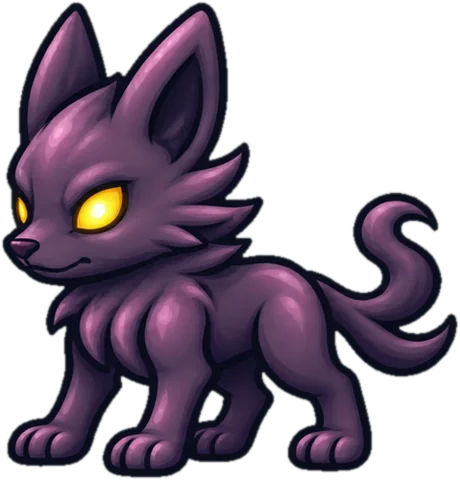

 Ghost
GhostTap a stage to read its story.
A tiny shadow-black kitten whose thick purple-dark fur absorbs what little light reaches Ghost Hollow. Its eyes blaze amber-yellow, and a wispy ghost-flame tail curls behind it. Embshade stalks the fog between hollow trees, batting at wisps it can only half-see. Young travelers often mistake its bright eyes for lanterns floating in the mist. The guardians say every kitten born here carries a small piece of the Hollow's first secret.
Field note: Embshade's tail-wisp dims when frightened and blazes double-bright when it finds a new hiding spot.
Ghost Hollow. Embshade and its family are found in the Ghost Hollow. See everyone who lives there.
Share a Bond Food that matches its types to become friends. Embshade loves:
A Bond Food is not a trick. It joins your spirit with the Kimuro's spirit, and only when it chooses you.
Print the Kimuro adventure packs: mazes, cards, a board game and Bond Mark medals.
See the printable packs